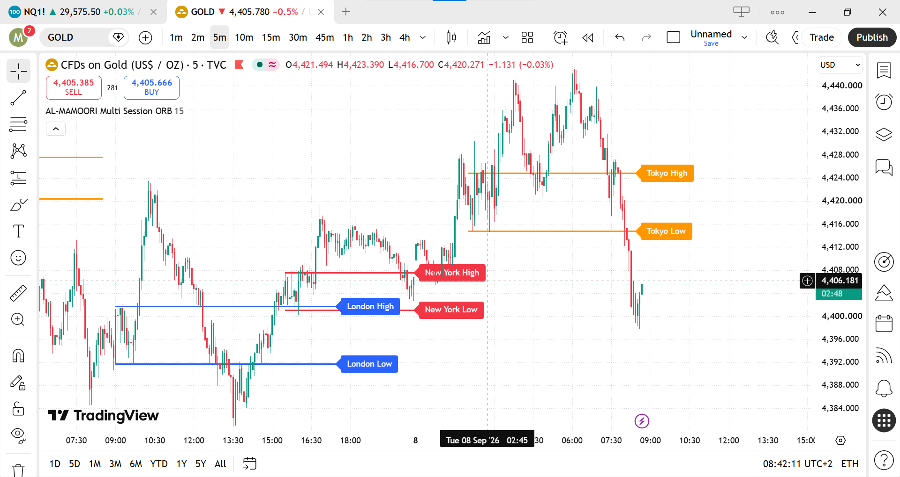

Multi-Session Opening Range Breakout Indicator
Multi-Session Opening Range Breakout Indicator

About This Project
AL-MAMOORI Multi Session ORB is a TradingView indicator built with Pine Script to automatically calculate and display Opening Range Breakout levels for major trading sessions.
AL-MAMOORI Multi Session ORB is a TradingView indicator built with Pine Script to automatically calculate and display Opening Range Breakout levels for major trading sessions.
Key Features
Multi Session Support
Displays ORB levels for London, New York, and Tokyo trading sessions.
Multiple ORB Lengths
Choose between 1, 5, 15, and 30 minute opening ranges.
Session Controls
Show or hide individual trading sessions directly from the indicator settings.
Automatic Timezones
Uses London, New York, and Tokyo local timezones for accurate session calculations.
Breakout Alerts
Includes alert conditions for price breaks above or below each session's ORB levels.
High & Low Labels
Clearly displays session-specific ORB High and ORB Low levels directly on the chart.